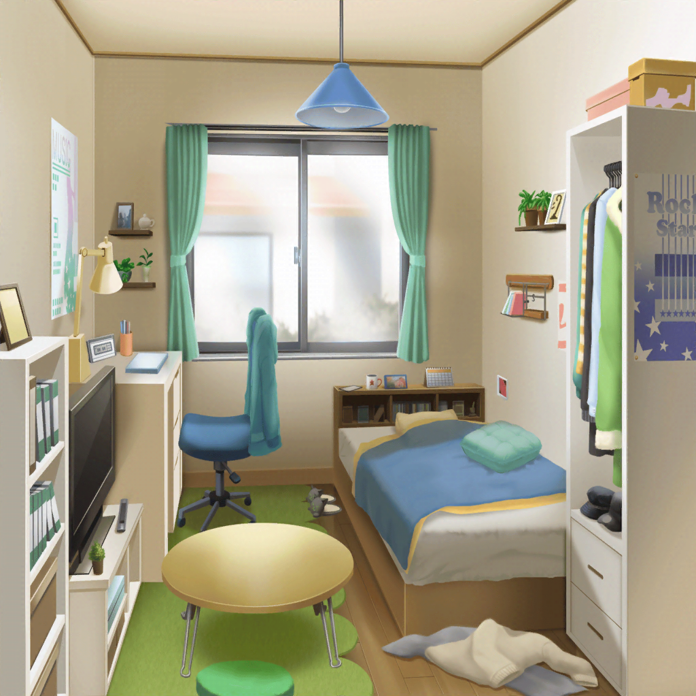

青葉家
モカ
ねえママ〜。前に話したチラシ、作ってみたから
ちょっと見てよ
モカの母
……これじゃ全然ダメだね。
まず、このチラシで一番いいたいことはなに？
モカ
えっ……と〜……
モカの母
考えずに進めるとこうなるんだよ。はい、やり直し！
気になるとこは赤ペン入れとくから、あとで見なさい
モカ
……うー。厳しいなあ。そんなに言わなくてもいいのに〜
モカ
けど、おっしゃる通りって感じだなあー。
時間もないから、適当に作っちゃったし
モカ
むー。
仕方ない、あの手を使うか……
ショッピングモール
モカ
……あ、あった！ この本〜♪
と、気になってた漫画の１巻〜
美咲
あれ？ 青葉さん？
モカ
んー？
……お、ミッシェルさんじゃないですか〜
美咲
……あ、うん。ミッシェル、ではあるけど……
美咲
（青葉さん、あんまり話したことないし、
どのくらいの加減で突っ込んでいいのかわかりにくいな〜……）
美咲
手に持ってる本て、漫画と……デザイン教本？
モカ
あれ？ ホントだ。
いや〜、この漫画と表紙が似てたから、間違えちゃったよ〜
美咲
（いやいや、全然似てないし！）
美咲
……あー、えっと……
イベントのチラシ作るの、担当なんだっけ？
モカ
そだよー。まあ、あたしならちょいっと作れちゃうかも？
なんて思ってたんだけど、そうもいかずでさー
モカ
とりあえず、本でも読んでみよっかなー的な感じで
本屋に来てみたんだ
美咲
へえ、そうだったんだ。
で、その漫画の表紙に似てる教本を買ってみようと思ったと
モカ
そうそう。そういうことー。
これ参考にして、なんかカッコイイ感じにしたいなー
美咲
カッコイイ感じねえ……Afterglowの人達って
オシャレな感じするし、デザインのこと相談してみたら？
モカ
あー、まあ、あたし達がオシャレなのはそうなんだけどさー……
美咲
（そこは否定しないわけね……って、言いたい！）
モカ
急にあたしの真剣なとこ見せちゃったら、
モカちゃんがモカちゃんじゃなくなっちゃった〜！！ って
みんな、心配するかもしれないじゃん？
モカ
Afterglowのメンバーが好きだからこそ、
みんなに心配かけたくないんだよ……っ！
美咲
あー
美咲
（本気、とかがんばる、とかそういう姿を
誰かに見られたくないって、なんかわかるかも）
モカ
そういう美咲ちんは？
美咲
あたしは……まあ……これを
モカ
『誰でもわかるDTM』？
どんな時も、とっても、モカちゃん、の略？
美咲
デスクトップミュージックだね……
モカ
えへへー。美咲ちんもなんだかんだバンドがんばってるって
感じ〜？
美咲
あー、まあこれは、ミッシェルの代理で
買ってあげた本っていうか？
モカ
そっかー。ミッシェルが突然本屋に来たら
みんなビックリしちゃうもんねー？
美咲
そうそう。ミッシェルに頼まれてあたしが
買いにきてあげたって感じ
モカ
……
美咲
……
モカ・美咲
……ぷっ……ふふっ……！
モカ
あたし達、なんか似てるとこなーい？
美咲
うん、そんな気がする
モカ
やっぱり？
ま、そんな感じでさ、お互いがんばろー